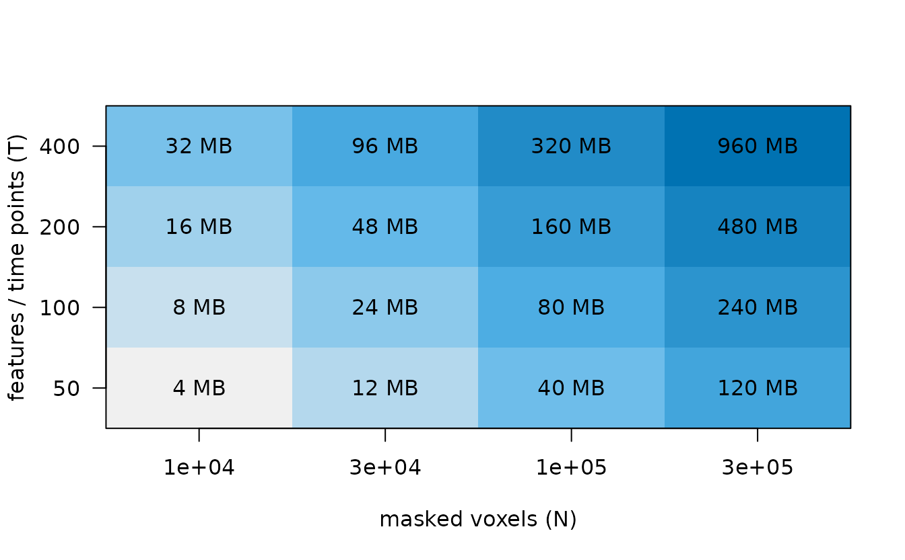

There is no universal fastest or smallest-memory method. Runtime depends on mask topology, time points, requested K, parameter values, thread backend, and hardware. Memory depends on implementation intermediates as well as the input. This article gives one exact lower-level quantity you can estimate, then shows how to produce evidence for your own workload.
What can be estimated before a run?
If the masked feature matrix is materialized as dense R doubles with
N voxels and T features, its payload is
exactly 8 * N * T bytes. This is one matrix, not peak
process memory: coordinates, labels, graphs, sketches, centroids,
temporary copies, and allocator overhead are additional.
dense_feature_mb <- function(n_voxels, n_features) {
8 * n_voxels * n_features / 1e6
}
dense_feature_mb(100000, 200)
#> [1] 160
Payload size of one dense double feature matrix. This is not an estimate of peak process memory.
What to notice. Doubling either axis doubles this matrix’s payload. It does not predict which algorithm will allocate copies or graph structures, so do not turn the heat map into a method ranking.
How should performance be measured?
Define the workload first: package version and commit, dimensions, included voxels, features, K, method arguments, thread setting, machine, operating system, and number of repetitions. Warm up compiled code, retain every repeat, and report a distribution rather than the single best time. Check the fitted result after each run so a fast failure or changed cluster count cannot win.
Benchmark with a reproducible receipt provides an executable micro-benchmark and receipt template. Parallel execution explains thread controls without changing global thread state.